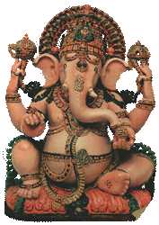
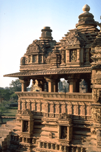
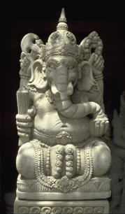
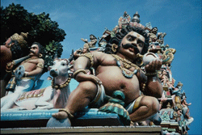

| Индуизм http://schools.keldysh.ru/school1413/religija/ind.htm |
|  |  |  |
|  |
| Индуизм - самая большая национальная религия в мире. По данным энциклопедии “Народы и религии мира” (М.,1998), всего в мире на 1996 год было около 800 миллионов сторонников этой религии, что составило 14% всего населения земного шара. Сегодня индуизм является доминирующей религией в Индии (индуистов более 80 процентов населения) и в Непале (индуистов около 80 процентов населения). Кроме того, индуисты есть во всех странах, где живут индусы. Наиболее крупные общины индуистов в 1996 году были в странах Азии: в Бангладеш (15 млн.), Индонезии (4 млн.) Шри-Ланка (2,5 млн.), Пакистане (1,3 млн.), Малайзии (1,1 млн.). Наиболее крупная община индуистов Африки была в ЮАР (700 тыс.), наиболее крупная община индуистов Америки - в США (575 тыс.), наиболее крупная община индуистов Европы - в Великобритании (500 тыс. последователей).
Индуистские служители культа (их называют “брахманами”) говорят, что “индуистом нельзя стать - им надо родиться”. Имеется в виду, что сторонниками индуизма могут быть только индусы по национальности. Однако несмотря на утверждения служителей культа, что неиндусы не могут быть индуистами, в США, Канаде и Великобритании среди индуистов можно встретить и лиц другой национальности. Индуизм возник в Индии в период времени между I и V вв. н.э. Предшественницей и главным идейным истоком индуизма была религия, которую называют брахманизмом (VII в до н.э. - V.в.н.э.). В свою очередь брахманизму предшествовала так называемая ведическая религия (XVI в. до н.э. - VII в до н.э.). Служители культа во всех трёх религиях (в ведической религии, в брахманизме и в индуизме) призывали верующих молиться в основном одним и тем же богам. В ведической религии верховным богом признавался Индра, бог грома и молнии. В брахманизме как верховному богу поклонялись Брахме, творцу мира и покровителю служителей культа. В индуизме существуют разные конфессии и разные боги в них почитаются как верховные. Но ни в одной из них верховным богом не считается Брахма. Непризнание Брахмы верховным богом составляет главное отличие индуизма от брахманизма. Такой переворот в религиозных воззрениях отражал переворот в реальной жизни. В Индии существовали и существуют касты (другое название: варны). Касты (варны) - это группы людей, принадлежность к которым определяется рождением. В прошлом принадлежность к той или другой касте определяла, каким видом деятельности должны заниматься люди (сейчас власти борются с этим обычаем, но не всегда успешно). Привилегированной кастой были брахманы. Только они одни могли быть служителями культа. Их покровителем считался и считается бог Брахма. Именно поэтому слово “брахман” (в переводе с древнеиндийского языка, называемого санскритом, - “отражение воли Брахмы”) обозначало одновременно и человека из данной касты, и служителя культа. Брахманы в древней Индии обладали большими преимуществами. Кроме монополии на профессиональную религиозную деятельность, они обладали ещё и монополией на педагогическую и научную деятельность. Эти три вида профессиональных занятий приносили им большие доходы. Но, кроме того, они имели ещё право на присвоение половины всех налогов, которые получали светские власти. Привилегированное положение брахманов в обществе отразилось и в религии того времени. Покровитель их касты и профессии служителей культа, которая монопольно принадлежала этой касте, бог Брахма, считался одновременно и верховным богом. Брахма своим сверхъестественным могуществом как бы закреплял те материальные привилегии, которые в реальной жизни имели брахманы. Представители трех других основных каст (кшатрии, вайшьи и шудры), недовольные сложившейся ситуацией, совершили социальный переворот. Брахманов лишили права присваивать себе часть налогов, лишили их и монополии на педагогическую и научную деятельность. Все, что им оставили, - это право быть служителями культа. Вместе с тем и в связи с этим три другие основные касты добились и понижения статуса бога Брахмы. Брахманы перестали быть самым привилегированным слоем общества, и их бог-покровитель перестал рассматриваться как верховный бог. Конфессии в индуизме. Общее количество конфессий в индуизме неизвестно. Но основными являются две: вишнуизм и шиваизм. Вероучения основных конфессий индуизма совпадают во всем, кроме ответа на вопрос, кто из богов является главным. Вишнуиты верховным богом считают Вишну, шиваиты - Шиву. Вишнуизм и шиваизм - это самые большие и примерно равновеликие конфессии. В них входят примерно по 40 процентов всех индуистов. Вишнуитские общины находятся по преимуществу на севере Индии, шиваитские - на юге Индии. Третьей по величине индуистской конфессией является шактизм. Шактисты поклоняются верховной богине, которая имеет несколько имён и одно из них - Шакти. В шактистские общины входит примерно 8 процентов всех индуистов. Они по преимуществу расположены в Бенгалии (это северо-восточная часть Индии) и на юге Индии. Если в индуизме и можно обнаружить какие-то отличия в вероучении, то, скорее, не между конфессиями, а между различными храмами одной и той же конфессии. Особенности организации индуизма порождают и некоторые особенности в его вероучении. В индуизме масштабы религиозной организации ограничиваются рамками храмов. Ни одна конфессия не имеет централизованного руководства даже в масштабах штата, не говоря уже о стране в целом. Поэтому индуизм не имеет ни церковных соборов, которые принимали бы какие-то руководящие решения, в том числе и по вопросам вероучения, ни централизованной руководящей религиозной прессы. Конечно, брахманы всех храмов, в конечном счёте, опираются на одну и ту же священную литературу. И это обеспечивает единство в главном. Однако священные книги нуждались в прошлом и нуждаются сейчас в их толковании. И в чем-то толкование было и остается различным. А это значит, что положения вероучения в толковании брахманов разных храмов в чём-то несущественном могут отличаться друг от друга. В вероучении индуизма можно выделить четыре основных положения: 1. о священных книгах, 2. о сверхъестественных существах, 3. о душе, 4. о загробной жизни. В индуизме в качестве священных почитается большое количество книг-томов. Точная цифра неизвестна, но во всяком случае их несколько сотен; они делятся на две группы. Первая группа называется шрути, (“услышанное”) вторая - смрити (“запоминаемое”). (Все термины в индуизме озвучены на санскрите.) Авторами книг-шрути являются боги. Но они авторы в особом смысле. Книги-шрути никто не создавал. Они возникли сами собой вместе с возникновением богов. Книги-шрути возникли не как книги, а как знания, которые находились в головах богов. Боги чудесным образом передали эти знания риши (мудрецам). А риши записали эти знания в виде книг. По своему содержанию книги делятся на семь групп. Первая группа - Веды (“Знание”) Это 4 книги-тома. Основным содержанием Вед являются тексты религиозных песен, тексты заклинаний и описания религиозных обрядов. Вторая группа священных книг - Брахманы (“отражение воли Брахмы”). Это несколько десятков книг-томов. По содержанию это комментарии к Ведам, в основном культового характера. Считается, что их содержание через служителей культа и для служителей культа передал бог Брахма. Третья группа - Араньяки (“Лесные книги”). Несколько десятков книг-томов шрути. Содержание: правила поведения для отшельников, рассуждения о сущности обрядности. Четвертая группа - Упанишады (“Тайное учение”). Название объясняется тем, что в прошлом учение, заключённое в этих книгах, передавалось только брахманам и их ученикам. Буквальный перевод звучит так: “рядом”(упа) и “внизу”(ни) “сидящим” (шады). Рядом и внизу, т.е. у ног учителя-брахмана, сидели его ученики. По своему содержанию это религиозно-философские комментарии к Ведам. Пятая группа - Пураны (“Древние предания”). Это несколько десятков книг-смрити. Наиболее древние пураны первоначально существовали в устной форме.По содержанию это рассказы о богах. Шестая группа - это одна книга-произведение: поэма под названием “Махабхарата” (“Великие бхараты”; бхараты - это название народа в Индии). В поэме около 100 тысяч двустиший. “Махабхарата” делится на 18 частей, которые тоже называют “книгами”. Книги-части имеют разную величину: от 320 двустиший до 14372-х. Седьмая группа - это опять одна книга-произведение и опять поэма. Её называют “Рамаяна” (“Сказание о Раме”). “Рамаяна” состоит из 24-х тысяч двустиший. “Рамаяна” делится на семь частей, которые обычно печатаются в одном томе. Индуисты верят в существование двух групп сверхъестественных существ: богов и демонов. Хотя боги занимают в иерархической лестнице сверхъестественного мира значительно более высокое положение, чем демоны, мы всё же начнём характеристику сверхъестественных существ с демонов, ибо такой порядок рассказа более удобен в методическом плане. Демоны. Демоны делятся на три вида: асуры (“небоги”), ракшасы (“те, кого сторонятся”), пишачи (перевод неизвестен). Асуры - противники богов, а ракшасы и пишачи - противники людей. Ракшасы вредят людям всеми возможными способами, а пишачи - главным образом через болезни, которые они насылают на людей. Функции демонов: творить зло, быть противниками богов, быть противниками людей. Но среди демонов встречаются и такие, которые совершают отдельные добрые поступки. Демонов много: их количество исчисляется миллионами. Демоны имеют плоть и пол. В обычном виде они выглядят уродливо, но для осуществления своих коварных планов могут приобретать облик мужчин и женщин. Демоны смертны: их тела погибают в сражениях с богами и людьми, а их души - вместе с гибелью Вселенной. Иногда люди воспринимают демонов органами чувств, иногда не воспринимают. Но если в иудаизме (а также в христианстве и исламе) делается акцент на то, что в подавляющем большинстве случаев люди демонов не видят и не слышат, то в индуизме такого акцента нет. Демоны делятся на старших и младших. Главного демона зовут Бали. Он вместе со многими другими демонами живёт в подземном царстве. Боги. В священной литературе в разных местах указывается разное количество богов: и 33, и 333, и 3306, и 3339. Практически наиболее почитаемыми во всех конфессиях являются 9 богов. Боги - это верховные сверхъестественные существа, управляющие миром. Как и в любой другой политеистической религии, каждый из богов имеет свои специфические функции. Одни боги выглядят как обычные люди, но, как правило, огромного роста, другие - в основном как люди, но с какими-то особенностями в строении организма (четыре руки, три глаза и др.), третьи - как животные (например, как обезьяны), четвёртые - как полулюди-полуживотные (например, царь птиц Гаруда изображается с головой и крыльями орла и с туловищем человека). Один из богов (Брахман) вообще не имеет видимого тела. Боги требуют поклонения, которое обозначается словом “пуджа”. Богам поклоняются в храмах и дома, перед семейным алтарём. Пуджа включает в себя пробуждение богов утром музыкальными звуками перед их изображениями (например, звоном колокольчиков), приношение изображениям богов цветов, воды и продуктов, молитвы и др. Девять наиболее почитаемых богов можно разделить на три тройки. В первую тройку входят верховные боги. Два из них сейчас почитаются как верховные боги (Вишну и Шива), один как верховный бог почитался в прошлом, в предыдущей религии (Брахма). Во вторую тройку входят их жёны (Лакшми, Парвати, Сарасвати). В третью тройку входят боги, хотя и не верховные, но очень уважаемые индусами (Брахман, Ганеша, Кама). Вишну (“проникающий во всё”, “вездесущий”) - верховный бог в вишнуизме . Кроме функции быть верховным богом, у него есть ещё две специфические функции. Во-первых, он - охранитель Вселенной. Вселенную создаёт Брахма, но созданную Вселенную надо охранять и от преждевременного разрушения, и от захвата власти над Вселенной демонами, что и делает Вишну. Во-вторых, он - помощник людям в решении их жизненных проблем. Вишну чаще всего изображается (и на рисунках, и в скульптурах) в виде четырёхрукого мужчины. В одной руке у него боевая раковина (он трубит в неё во время сражений), во второй - палица, в третьей - чакра (метательное оружие в виде металлического диска), в четвёртой - цветок лотоса. Оружие в трёх руках символизирует готовность Вишну бороться с силами зла, цветок лотоса символизирует его любовь к людям и готовность им помогать. Для характеристики Вишну очень важно использование понятия “аватара”. В буквальном переводе это слово означает “нисхождение”. По своему существу аватара - это другое и земное тело бога. Вместе с другим телом бог получает и другое имя. При переселении души бога в земное тело, эта душа одновременно остаётся и на небе, в основном, небесном теле бога. Эта душа как бы раздваивается. Второе, дополнительное, физическое тело бога существует только некоторое время. Потом оно умирает, и душа бога возвращается в своё основное и вечное тело. По мифологии индуизма у Вишну было уже 9 аватар и ещё одна будет в будущем. Вот аватары, которые уже были. Первая: жизнь в теле рыбы. Вторая: жизнь в теле черепахи. Третья: жизнь в теле кабана. Четвёртая: жизнь в теле полульва-получеловека. Итак, в первых четырёх аватарах душа Вишну пока ещё не поселялась в теле человека. В остальных пяти аватарах она живёт в человеческом теле. Пятая: в теле карлика по имени Вамана. Собственно слово “вамана”и означает “карлик”. Шестая: в теле человека по имени Парашурама (“Тёмный с топором”). Это был воин, сын брахмана, который всегда ходил с боевым топором. Седьмая: в теле человека по имени Рама (“Темный”). Восьмая: в теле человека по имени Кришна (тоже переводится как “Темный”). Девятая и последняя: в теле человека по имени Будда (“Просветлённый”). Речь идёт об основателе буддизма. Будущая, десятая аватара тоже будет в теле человека, которого будут звать Калки. Калки, по вероучению индуизма, приедет на белом коне и в царском одеянии. Поэтому эту аватару называют ещё так: “царь на белом коне”. Он приедет через много лет, когда на земле власть будет принадлежать негодяям. Калки накажет негодяев и установит на земле золотой век. Шива (“Милостивый”) - верховный бог в шиваизме. По своим специфическим функциям Шива - бог разрушения Вселенной (он разрушает её, когда приходит для этого время, назначенное богами), бог смерти и рождения человека (индуисты говорят: Шива стоит и у гроба, и у колыбели), бог живой природы (он заботится и о растениях, и о животных). Шива чаще всего изображается мужчиной темно-синего или лилового цвета с четырьмя руками и тремя глазами. Третий глаз, который расположен посреди лба (не горизонтально, а вертикально) не только видит, но и излучает сверхъестественный огонь, который сжигает всё на своём пути. У Шивы тоже есть аватары, их более 20-ти. Ганеша (“Начальник свиты”) - сын Шивы и Парвати, бог удачи и предпринимательства, начальник свиты своего отца (свита состоит из богов низшего разряда). Верующие воры и мошенники в Индии считают Ганешу также и своим покровителем, богом воровской удачи. Ганеша изображается в возрасте подростка с четырьмя руками и с головой, похожей на голову слона. Это единственный бог в индуизме, у которого вместо носа - хобот. Индуисты стремятся иметь дома скульптурное изображение Ганеши. Ни одно дело они не начинают без молитвы Ганеше. И для того, чтобы особенно угодить Ганеше, они по утрам чешут ему живот. Кама (“Чувственное желание”, “Любовь”) - бог любви. Его изображают как юношу с луком и стрелами в руках. Лук у него сделан из сахарного тростника, тетива лука - из живых пчёл, стрелы - из цветов. Когда стрелы Камы вонзаются в тела богов или людей, то они возбуждают в них жгучую любовную страсть. Согласно вероучению индуизма, боги бессмертны. Но есть два исключения. Первым исключением является Ганеша, а вторым - Кама. Кама умер, испепелённый огненным лучом разгневанного Шивы. Но потом по просьбе Парвати Шива сделал так, чтобы Кама родился второй раз. Загробная жизнь имеет два этапа. Первый этап называется сансарой. Второй - выходом из сансары. Буквальный перевод слова “сансара” с санскрита звучит как “странствование”. Наряду с санскритским термином “сансара” для обозначения первого этапа загробной жизни в литературе используются также французское слово “реинкарнация” и русское - “перерождение”. По своей сущности это переселение души из одного тела (после его смерти) в другое. Механизмом сансары является карма (“поступок”, “деяние”). Карма - это закон перерождения, согласно которому при преобладании хороших поступков человек получает хорошее перерождение, при преобладании плохих - плохое перерождение. Индуисты в связи с эти говорят: какова карма - такова и сансара. Если у вас хорошая карма, то будет хорошая сансара. Хорошее перерождение - это тело здорового, богатого человека со счастливой судьбой. Плохое перерождение - это тело или растения, или животного, или человека больного, бедного и несчастного. По воззрениям индуистов преступник в одной из следующих жизней становится жертвой того преступления, какое он совершил. Вор будет обворован, насильник - изнасилован, убийца - убит. Специфичными этапами сансары является пребывание душ людей в раю (для праведников) или в аду (для грешников). После временного блаженства или временных мучений души возвращаются в земную жизнь. Ад обозначается термином “нарака”. Считается, что ад имеет несколько отделений (называют следующие цифры: несколько тысяч, 50, 28, 21, 7 и 3) Чаще всего называется цифра 7, и в этой связи сторонники индуизма говорят и пишут о “семи кругах ада”. В каждом последующем отделении ада мучения становятся более сильными. Попавших в ад изнуряют бессонницей, сбрасывают в реки с нечистотами, заставляют обнимать раскалённое железо, дают на растерзание зверям, птицам и змеям, разрывают на части, варят в кипящем масле, сжигают в пылающей яме... При этом несчастные остаются живыми, для того чтобы продолжать мучиться дальше, пока не окончится срок, определённый их плохой кармой. В какое именно отделение направить душу умершего, каким мукам его подвергнуть, решает владыка царства мёртвых, бог Яма. Второй этап загробной жизни для грешников - это попадание в последнее (чаще всего: в седьмое) отделение ада. Дело в том, что пребывание в последнем отделении ада выходит за пределы сансары. Сюда направляют самых закоренелых грешников. Из предыдущих отделений ада души грешников рано или поздно, но возвращаются в земную оболочку. Из последнего отделения возврата нет. Здесь души грешников находятся до конца “дня Брахмы” а с наступлением “ночи Брахмы” уничтожаются. Второй этап загробной жизни для особо заслуженных праведников обозначается термином “мокша” (“избавление”, “освобождение”). Мокша по своему существу - это слияние душ особо заслуженных праведников с душой Брахмана. Это слияние означает выход из сансары и понимается как высшее и вечное блаженство. Индуизм - самая большая национальная религия в мире, и уже это - очень серьёзная причина для внимательного изучения индуизма. |